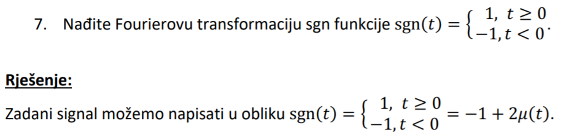
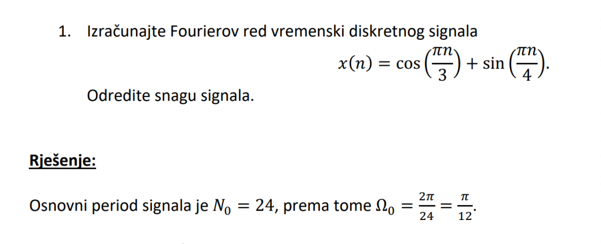

Kakvu ispričnicu mogu dat ako sam imao tehničkih problema pe nisam stigao predat blic na vrijeme
Trava Nikakvu, samo napišeš što je bio problem.
kome slat mail u vezi labosa , stavili su mi prvo prolaz “da” za 6. vjezbu i onda naknadno dosao mail da mi je prolaz “ne”
Maroje i mene zanima
Jel ima netko rjesenja ZI 2017/2018?
Jenny Talia ja sam poslao Juraju Petroviću jer vidim da je on asistent. Valjda sam dobrom liku poslao , vidit cemo
Maroje Isti problem tek sad uočen, poslao mail. Što je bilo objašnjenje?

zašto ovdje dolje nije -1+2\mu(t)+1 ?
Umarell jer bi pri negativnim brojevima ispalo 0 (step funkcija ce dati 0 za sve negativne brojeve pa ce ti ostati -1 i 1), a trebas dobiti -1
Kako su ovdje dobili N_0? 
Umarell N_1 = \frac {2\pi}{\pi/3} = 6 , N_2 = \frac {2\pi}{\pi/4} = 8 N_0 = NZV(N_1,N_2) = 24
Isplati li se učiti za rok samo iz starih ispita? Tj. je li uglavnom budu isti tipovi zadataka?
Umarell Pretty much
M̵̧̩͑̀͝î̶͍̉ć̴̝̾́̀o̶̺̟̣͂̽ Hvala. Upravo si mi uštedio dan ipo rješavanja onih njihovih ZZV od kojih pola zadataka ima nekakav postupak, a pola nikakav.
Umarell Ti ZZVovi su dobri kad riješiš sve ispite tbh, ali koliko znam većina, ako ne i svi tipovi zadataka su već u ispitima
Kakvi su dojmovi sa proslih usmenih?
Ruasonid do sad nije postojao, a nisu niti na uvodnom predavanju išta rekli tako da sumnjam da postoji. al opet, ako si paranoičan, moš uvijek poslat mail nekom od nositelja
Mulder Aha aha, ma zbunilo me to bodovanje jer nije dobro navedeno na predmetnoj stranici. Sad vidim na prezi da je udio u ocjeni od ispita 100%
Hahahahahahahahahahahahahahahahhahahahahahahahahahahhaahhah